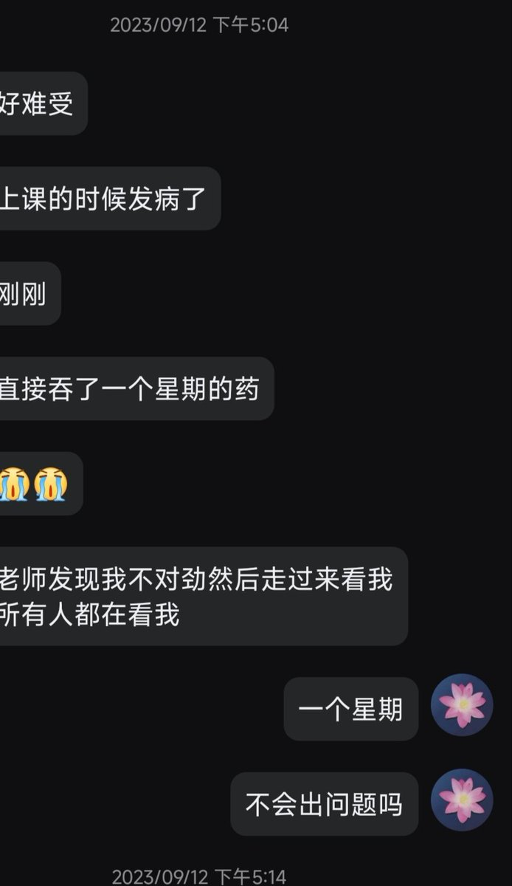
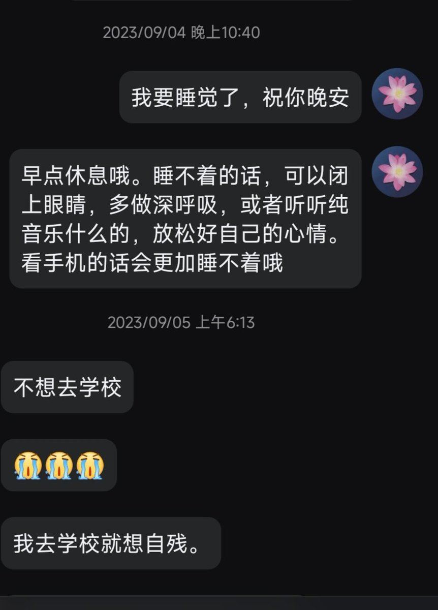
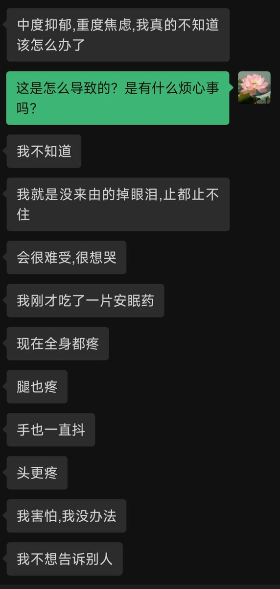
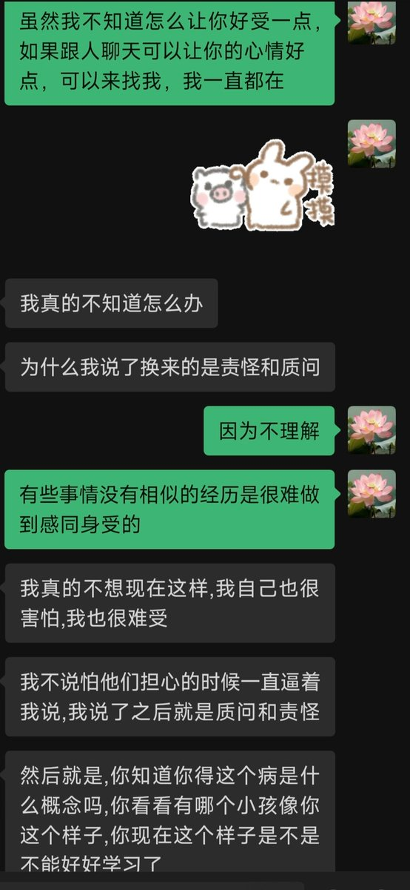

我从十年前开始接触第一个抑郁症孩子，那个时候我还不知道抑郁是什么。我只知道她总是很难过，所以就一直陪着她，最后她也慢慢变得阳光开朗起来。（太久远了聊天记录都没了）
P1P2是我认识了九年的孩子，P3P4是我认识了七年的孩子，算是我看着长大的孩子了。原来23年我就接触到od和自残了吗？只是那个时候我对这些也没有什么概念。
她们包括我在内，都曾经被抑郁，焦虑所折磨，但是在熬过这些痛苦之后，她们都过上了平淡幸福的生活。
所以我永远都不相信天会一直下雨，总有放晴的那一天。只要不放弃自己，日子总会好起来的，这是我的亲眼所见，也是我的亲身经历。
P1P2是我认识了九年的孩子，P3P4是我认识了七年的孩子，算是我看着长大的孩子了。原来23年我就接触到od和自残了吗？只是那个时候我对这些也没有什么概念。
她们包括我在内，都曾经被抑郁，焦虑所折磨，但是在熬过这些痛苦之后，她们都过上了平淡幸福的生活。
所以我永远都不相信天会一直下雨，总有放晴的那一天。只要不放弃自己，日子总会好起来的，这是我的亲眼所见，也是我的亲身经历。



